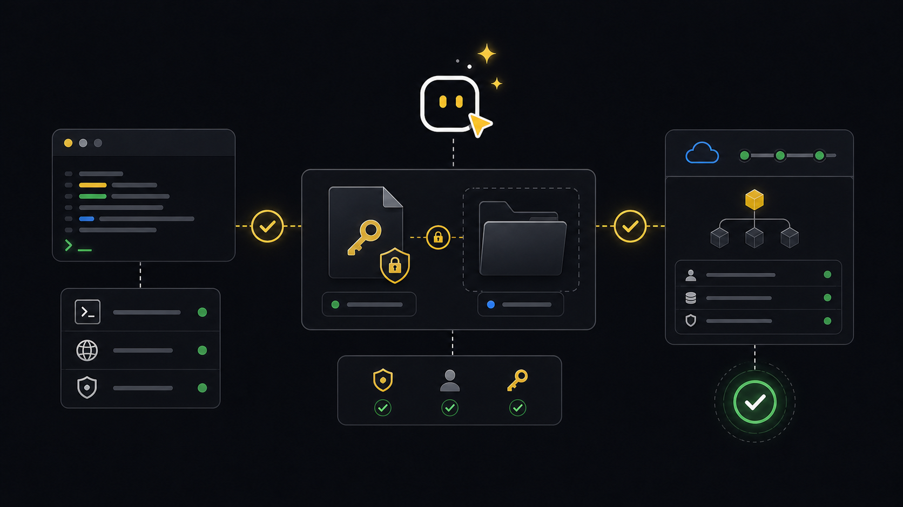

Setup
Setup readiness.
Use this before any operational workflow. It confirms that the CLI runs, the API key is connected, and Xyte can answer basic API checks.
Ask an agent
Ask like this. The workflow below shows what the agent should check behind the scenes.
Use xyte-cli to check whether this machine can run tenant operations.What the agent will do
- DiscoverCheck readinessConfirm the CLI, setup profile, and tenant connectivity.
- InspectRead statusRun status and doctor checks before any operational work.
- ChooseSetup pathUse existing setup or ask for missing tenant/key-file details.
- WriteSave diagnosticsCapture useful status output when something blocks setup.
- ReturnHandoffSay what works, what is blocked, and what to run next.
Ask how it works first
A shell-capable agent with xyte-cli guidance can explain the setup path before it runs commands.
What does xyte-cli setup status check?
How do I connect xyte-cli to a tenant?
Why is config doctor failing?If the agent cannot run shell commands, use the Terminal Commands view instead.
Goal
A complete setup result means three things: the command resolves on PATH, the key is stored outside the repository, and the tenant responds before you run fleet, incident, Edge, or report commands.
Commands
-
Check the local command environment
Start here even if you think the CLI is installed. The doctor tells you whether to use the installed binary,
npx, or a workspace-local install.xyte-cli doctor environment --format text xyte-cli doctor install --format text xyte-cli --version -
Connect the API key without exposing the secret
Create the API key in Xyte and save it in a plain text file outside the project folder. The CLI stores it under the active profile, using
defaultunless you choose another label.xyte-cli setup run \ --non-interactive \ --key-file <path-outside-workspace> \ --format json -
Confirm readiness and connectivity
Run both checks.
setup statusreads the selected profile;config doctorchecks whether the key can actually reach the service.xyte-cli setup status --format text xyte-cli config doctor --format text xyte-cli status --mode fast --format json
Read the output
setup statusshould show the active profile and that setup is ready.config doctorshould report connected. If it does not, fix this before using operational commands.status --mode fastgives a compact machine-readable readiness result for scripts and agents.
Profile: default
State: ready
Connectivity: connected
Missing setup: noneContinue when the CLI can reach the tenant and connectivity is connected. If setup is missing, the key cannot reach the tenant, or provider scope is wrong, stop here and fix setup before moving on.
Make this repeatable
# Environment
XYTE_KEY_FILE=~/Desktop/xyte-api-key.txt
# Rerun path
xyte-cli setup run --non-interactive --key-file "$XYTE_KEY_FILE" --format json
xyte-cli config doctor --format jsonIf it fails
xyte-cli is not foundRun npx -y @xyteai/cli@latest doctor environment --format json and use the command recommended in the report.
Run setup again with the key file. If provider auto-detection fails, ask your admin whether the key is organization or partner scoped.
Check network access, key scope, and provider selection. If you are intentionally offline, run setup with an explicit provider and --connectivity never.